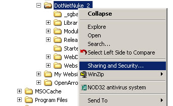
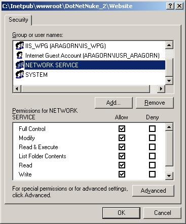

This section includes more detailed information on how to configure NTFS File permissions for use with DotNetNuke.
1. There are two ways in which you can configure the NTFS File permissions. In Internet Information Services (IIS) Manager, choose the website and select Permissions.
or in File Explorer select the Physical Directory for the Website and .

2. In the Security dialog select the account (NETWORK SERVICE in Windows 2003, ASPNET in Windows 2000), and give the account Read,Write and Change permissions to the folder..

Back to Welcome page.